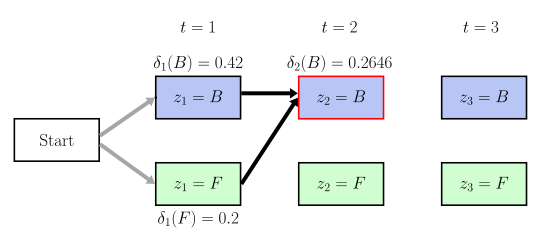
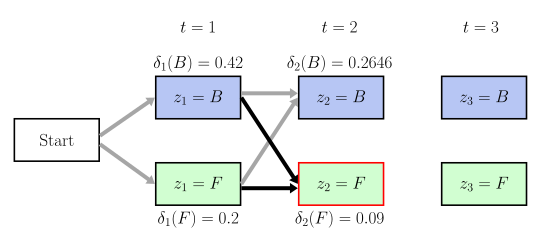
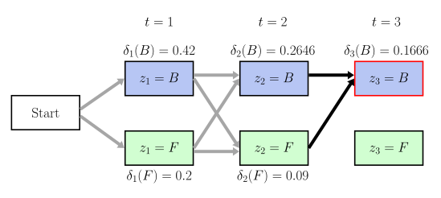
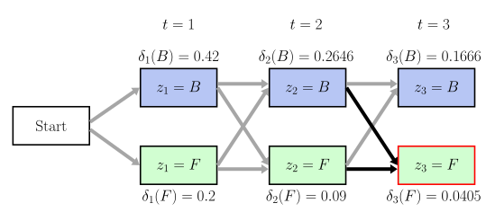
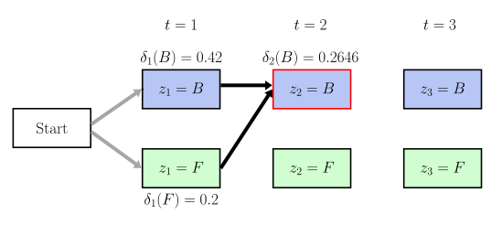
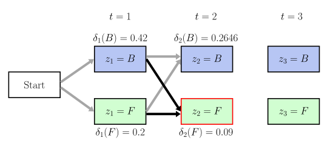
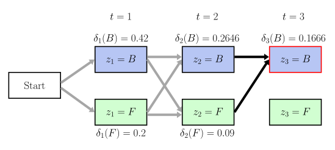
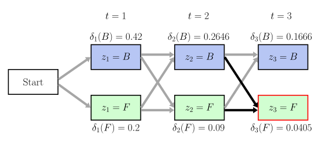

Sequential Modeling
Have you ever wondered how the voice assistant in your phone works
HMMs model the data as a sequence. Let us take an example to see why modeling as a sequence makes sense. A sentence like "I like playing …" would often be followed by "guitar," "football," etc. In such examples, the previous word helps us better guess the next word/words. This is an example of language modeling
In this article, we discuss Markov chains, Hidden Markov Models, and the key problems of Hidden Markov Models.
Let us consider another example. Imagine that it has been raining the past few days, and someone asks you if it will rain tomorrow. You might reason, "Given that it rained today, I think it will rain tomorrow." You know that it usually rains for a few days in succession. Rains also have a seasonal and continuity phenomenon attached to them. A typical example is shown below.

Rainy-Sunny time-series data
Thus, for time-series data, modeling the data as a sequence instead of assuming it to be independent and identically distributed (IID) is advantageous.
Markov chain
A Markov chain is one of the simplest Markov models. This chain assumes that an observation
In other words, given the present observation, the future is independent of the past.
We use the following graphical model to denote a Markov chain.
Markov chain graphical diagram
Nodes colored in pink denote observations. The arrows indicate the dependencies between the present and the past.
Using the rules of independence, we can calculate the joint probability of the sequence as: \(P(x_{1},x_{2},\dots,x_{t+1} ) = P(x_1)P(x_2 \vert x_1) P(x_3 \vert x_2) \dots P(x_t \vert x_{t-1}) P(x_{t+1} \vert x_{t})\)
We now try to understand Markov chains using some examples.
Markov chain for Sunny and Rainy Weather
Assume a scenario where you observe the weather for a place. The above Markov chain denotes the change of weather. The weather of the next day depends on the previous day.
Markov chain for a Fair and a Biased coin swap
Assume a scenario where you have two coins: fair and biased. The above Markov chain denotes the coin you choose at a timestamp. The coin chosen at the next timestamp depends on the coin at the previous timestamp.
Markov chain for an Air Conditioner state
Assume a scenario where the compressor of an air conditioner is turned ON/OFF. The above Markov chain denotes the state of the compressor. The state of the compressor at the next timestamp depends on the state at the previous timestamp.
Parameters of Markov chain
Each observation \(x_t\) (at time t) can take a discrete value or "state." For example, in the case of weather, the states were Rainy or Sunny; in the case of coin swap, the states were Biased or Fair; and in the case of the air conditioner, the states were ON or OFF.
We generally assume that the observation can take one of the \(K\) states.
Let us now understand the parameters for a Markov chain. We can rewrite the factorization of the above general Markov chain as:
\(P(x_{1},x_{2},\dots,x_{T} ) = P(x_1)\displaystyle\prod_{t=2}^TP(x_t|x_{t-1})\)
Markov chains assume that the conditional probability
- Transition Matrix \((A)\): The transition matrix stores the probability of transition between the state i to state j. Thus, the transition matrix can be represented as a \(K\) x \(K\) matrix where the entry \(A_{ij}\) is given by \( A_{ij} = P(x_t = j \vert x_{t-1}=i)\) where \(i,j \in \{1,2 \ldots K\}\).
- Prior Probability \((\pi)\): The probability of starting from one of the available states. It is denoted by \(\pi_i = P(x_1 = i)\) where \(i \in \{1,2 \ldots K\}\).
Markov chain for Sunny and Rainy Weather
Assume a scenario where the weather of a particular place follows a Markov chain. The above diagram describes how the weather can change. In this example, we can observe the outside weather. Any sunny day is followed by a rainy day with a probability of 0.4.
Observation: Rainy/Sunny
Markov chain for a Fair and a Biased coin swap
Assume a scenario where your friend is swapping between a fair and a biased coin using a Markov chain. The above diagram describes how the coin your friend chooses can change. In this example, we can observe the coin chosen by your friend. Your friend can choose a biased coin again in the consecutive selection with probability 0.6.
Observation: Biased/Fair coin

Markov chain for Air Conditioner state
Assume a scenario where the compressor of an air conditioner is controlled using a Markov chain. The above diagram describes how the state of the compressor changes. In this example, we can observe if the compressor is ON or OFF. The compressor has a probability of changing its state from ON to OFF with probability 0.3.
Observation: ON/OFF state
Markov chain Sampling
Given the parameters of a Markov chain \(A\) and \(\pi\), we can generate sequences from it. First, we sample an initial state using the \(\pi\) vector. Then iteratively, we sample a new state from the previous state using the \(A\) matrix.
Markov chain Sampling Algorithm+
Below is a generation example for the Markov chain for the Sunny and Rainy example. By changing the values in the Transition matrix (\(A\)), and the Prior Probability matrix (\(\pi\)), we can see how the sequence generation is affected.
Prior Probability \((\pi)\)
| State | Probability |
|---|---|
| Sunny | 0.5 |
| Rainy | 0.5 |
Transition Matrix \((A)\)
| Sunny | Rainy | |
|---|---|---|
| Sunny | 0.5 |
0.5 |
| Rainy | 0.5 |
0.5 |
FSM representation of the Transition matrix and Prior probability matrix
Generated Sequence
Hidden Markov Model
Previously, in our unfair coin toss example, we could observe whether the coin tossed was fair or biased. Now, consider an extension of the previous setting, where, instead of showing the flipped coin, only the result of the flip was shown to us. Therefore the coin (biased or fair) is "hidden." The result of the flip (heads or tails) is "observable." A typical HMM has two kinds of nodes: set of hidden states \(z\), and observations \(x\).
The "observation" is generated or emitted from the "hidden" component.
Now, we explore more examples to understand this "hidden" state.
HMM for Sunny and Rainy Weather
Assume that you are sitting in your room, and you have no means to know about the outside weather. Your roommate goes outside every day. You keep on observing your roommate's shoes for a sequence of days, as denoted by the above diagram. Given the sequence of observations, you try to estimate the outside weather.
Observation: Wet shoe/ Dry shoe
Hidden State: Outside weather
HMM for a Fair and a Biased coin swap
You have one fair coin and one biased coin. In a game, your friend picks one of these two coins, following an associated probability. She tells you just the result of the toss and not the coin which she chose. Given such a series of results, you try to estimate which coin was used for a particular toss.
Observation: Result of the toss (Head/Tail)
Hidden State: Type of coin (Fair/Biased)
HMM for an Air Conditioner state
You have access to the power consumption data of your air conditioner. When the compressor is turned off, the appliance uses very low power (~0 units with some observation noise), whereas when the compressor is turned on, it consumes high power (~100 units with some variance). Given the power consumed by the appliance, you have to estimate whether your compressor was switched ON or OFF.
Observation: Power consumed
Hidden State: State of the compressor (ON/OFF)
You might have already seen that an HMM looks similar to the Markov chain. In an HMM, an observation is generated from a hidden component, which is modeled as a Markov chain. The observation at time \(t\) (shown in shaded pink) is denoted by \(x_t\), and the hidden state at time t (unshaded) is denoted by \(z_t\).
The diagram below denotes an unrolled Hidden Markov model.

An unrolled HMM
It is worth noting that the hidden component is modeled as a Markov chain and not the observations.
Hidden Markov Model Parameters
There are three parameters in the HMMs: (a) transition matrix \(A\), (b) prior probability \(\pi\), and (c) emission probability \( \phi \). Out of these three parameters, the transition matrix and prior probability are similar to the ones in the Markov chain. The emission probability is explained below.
- Emission Probability \( \phi \): The conditional probability of observing a value \(x\) from a state \(z\) is given as \(\phi = P(x_t \vert z_t)\)
The observations can be either discrete or continuous.
- Discrete output examples: (A) Fair and Biased coin observations, and (B) Sunny and Rainy weather observations
- Continuous output examples: Power consumed by an air Conditioner
HMM for Sunny and Rainy Weather
On a sunny day, your roommate's shoes can be wet with a probability of 0.2(maybe due to a sprinkler). On a rainy day, the shoes can be wet with a probability of 0.9.
Observation: Shoe
Hidden State: Weather

HMM for a Fair and a Biased coin swap
If your friend flips a biased coin, then the output is a heads with probability 0.8. If your friend flips a fair coin, then the output is a heads with probability 0.5.
Observation: Heads/Tails
Hidden State: Biased/Fair Coin

HMM for an Air Conditioner state
If the compressor is in an OFF state, the output follows a Gaussian distribution \(\mathcal{N}(10,5)\). If the compressor is in ON state, the output follows a Gaussian distribution \(\mathcal{N}(100,5)\).
Observation: Total power consumed by the appliance
Hidden State: Compressor ON/OFF
Hidden Markov Model Sampling
Given the Hidden Markov model parameters: \(A\), \(\pi\), and \(\phi\), we can generate sequences from it. First, we sample a hidden state from the prior probability matrix \(\pi\). Next, we sample an observation using the Emission probability matrix \(\phi\) conditioned on the sampled state.
Iteratively, we sample a new hidden state from the transition matrix \(A\) conditioned on the previously sampled hidden state. For each sampled state, we sample an observation using the Emission probability matrix \(\phi\).
Hidden Markov Model Sampling Algorithm+
Below is a generation example for the Hidden Markov model for the Fair coin and Biased coin example. By changing the values in the Transition matrix (\(A\)), Emission Probability matrix (\(\phi\)), and the Prior Probability matrix (\(\pi\)), we can see how the sequence generation is affected.
Sampling from a Hidden Markov model for Fair and Biased coin example
Prior Probability \((\Pi)\)
| Coin | |
|---|---|
| Fair | 0.5 |
| Biased | 0.5 |
Transition Matrix \((A)\)
| Fair | Biased | |
|---|---|---|
| Fair | 0.5 |
0.5 |
| Biased | 0.5 |
0.5 |
Emission Probability \((\Phi)\)
| Phi | Head | Tails |
|---|---|---|
| Fair | 0.5 |
0.5 |
| Biased | 0.5 |
0.5 |
Trellis Diagrams
We now discuss trellis diagrams, which we shortly use to understand HMM algorithms. Consider the following trellis diagram showing the possible path sequence of hidden states for three timestamps for the biased-fair coin example.
In the diagram \(B\) denotes the Biased coin and \(F\) denotes the Fair coin. The highlighted red path corresponds to one (of possible eight) state sequence.
Trellis diagram corresponding to the path \(\{z_{1}=B, z_{2}=B, z_{3}=F\}\).
In the diagram B denotes the Biased coin, and F denotes the Fair coin.
HMM Algorithms
Now, we look at five critical questions to understand HMMs
- HMM Evidence Likelihood
- Forward algorithm
- Backward algorithm
- Viterbi algorithm
- Parameter learning
HMM Evidence Likelihood
The objective is to estimate the likelihood \(L(X \vert \theta)\) of the observation sequence \(X=\{x_1, x_2 \ldots x_T\}\) given the HMM parameters \( \theta = \{\pi, A, \phi \}\).
Before we compute this likelihood, let us work out a simpler problem based on Biased (B) and Fair (F) coin flip with observations Heads (H) and Tails (T).
Given a series of observations \(\{H, H, H\}\), what is the probability of observing this sequence given \(\{z_{1}=B, z_{2}=B, z_{3}=B\}\)?
Trellis diagram corresponding to the path \(\{z_{1}=B, z_{2}=B, z_{3}=B\}\)
\(P(HHH\vert BBB)\) can be written as a product of:
- The Prior probability of observing B
- Emission probability of Heads given state B at time t=1
- Transition probability from B to B at time t=1
- Emission probability of Heads given state B at time t=2
- Transition probability from B to B at time t=2
- Emission probability of Heads given state B at time t=3
How can we compute \(L(HHH \vert \theta)\)?
In order to do that, we need to consider all the paths that can generate \(\{HHH\}\) sequence. The visualization below shows the probability of the observations given the different possible state sequences of the hidden component (coin is biased or fair).

Path 1
Probability Path 1
In the above example, we have \(T=3\) and \(K=2\). We have a total of \(2^{3} = 8\) possible paths. \(L(HHH \vert \theta)\) is the sum of probabilities across all these \(2^{3}\) paths.
In general, when we have \(K\) states and \(T\) timestamps, there are a total of \(K^{T}\) paths. Hence, the time complexity of estimating the likelihood is exponential in \(K\).
Assume a scenario where \(K=10\) and \(T=100\). When computing likelihood, this leads to \(10^{100}\) paths, which is greater than the total number of atoms in the universe!
Efficiently calculating \(L(X \vert \theta)\)
Let us see if we can efficiently compute \(L(X\vert \theta)\). Let us go back to the fair coin and biased coin example. We wish to compute \(L(HHH \vert \theta)\).
\(L(X \vert \theta) = P(HHH \vert z_{3} = F) + P(HHH \vert z_{3} = B)\)
Similarly, we can write
\(P(HHH \vert z_{3}=F) = \Big[P(HH \vert z_{2}=F)*A_{FF}+P(HH \vert z_{2}=B)*A_{BF}\Big] \phi(H \vert F)\)
Similarly to the above, we can compute \(P(HHH \vert z_{3}=B), P(HH \vert z_{2}=F)\), and \(P(HH \vert z_{2}=B)\).
Finally, we need to compute \(P(H \vert z_{1}=F)\) and \(P(H \vert z_{1}=B)\)
\( P(H \vert z_{1}=F) = \pi_{F} *\phi(H \vert F) \)
\( P(H \vert z_{1}=B) = \pi_{B} *\phi(H \vert B) \)
If we expand the computation tree, it looks like the following:
Computation Tree for calculating \(L(X \vert \theta)\)
We can observe that we are computing \(P(X_{1:t}\vert z_{t}=i)\) via this computation graph. We can also see that some nodes are being computed multiple times, and the computation graph can be made efficient by avoiding the recomputation, as shown below.
Optimized Computation Tree for calculating \(L(X \vert \theta)\)
We effectively reused the node values to reduce the number of computations on the new algorithm; we call the new efficient algorithm, the Forward Algorithm.
Forward Algorithm
The Forward algorithm is a dynamic programming based approach using which we can efficiently compute the likelihood of observation \(P(X \vert \theta)\).
Previously, we discussed that we need to compute \(P(X_{1:t}\vert z_{t}=i)\).
This quantity is denoted by \(\alpha_{t}(i)\).
It is the probability of being in state 'i' at the time 't' given the 'observations till time t'.
\( \begin{align} L(x_{1:T} \vert \theta) = P(x_{1:T} \vert \theta) = \sum_{i}^{} \alpha_T(i) \end{align} \) Thus, we need to learn \(\alpha_{T}\). We also trivially know \(\alpha_{1}\). Thus for learning \(\alpha_{T}\), we need to go "forward" by defining \(\alpha_{t+1}\) in terms of \(\alpha_{t}\).
Relation between \(\alpha_{t}\) and \(\alpha_{t+1}\)
We can end up in state \(j\) at time \(t+1\) from each of the \(K\) paths starting at the previous timestamp of \(\alpha_t(i)\) of the state \('i'\) multiplied with the transition probability \(A_{ij}\) and emission probability \(\phi_j(x_{t+1})\).
Thus, generally, we can write:
\(
\begin{align}
\alpha_{t+1}(j) &= P(x_{1:t+1} \vert z_{t+1} = j)\\
&= \sum_{i=1}^{K} \alpha_{t}(i).A_{ij}.\phi_{j}(x_{t+1})
\end{align}
\)
Forward Algorithm+
Computing the likelihood of a sequence \(L(X \vert \theta)\) using the forward algorithm is \(O(TK^{2})\).

Now, we move on to the third important problem for understanding HMM, which is the Backward algorithm. The Backward algorithm plays a key role in the parameter learning algorithm of the HMMs.
Assume we want to compute the probability of a future observation sequence conditioned on the present state.
How can we calculate it efficiently? Similar to the forward algorithm, we can use dynamic programming to compute it efficiently. This procedure is called the Backward algorithm.
Intuition behind Backward Algorithm+

Backward Algorithm
The Backward algorithm is a dynamic programming based approach using which we can efficiently calculate \(P(X_{t+1:T} \vert z_{t}=i)\), by defining a new variable (similar to the forward algorithm)
In other words, it is the probability of observing 'the future observation sequence \(X_{t+1:T}\)' given state 'present state \(i\)' at the ' time t'.
Relation between \(\beta_{t}\) and \(\beta_{t+1}\)
Let us assume a general case, where we have \(K\) states. We can end up in state \('i'\) at time t from each of the \(K\) paths starting at the next timestamp of
\(\beta_{t+1}(j)\).
Mathematically,
\(
\begin{align}
\beta_{t}(i)\hspace{0.5em}=&\hspace{0.5em}P(x_{t+1:T} \vert z_t = i) \\
=&\hspace{0.5em}P(x_{t+2:T}\vert z_{t+1}=1).A_{i1}.\phi_1(x_{t+1}) + \\
&\hspace{0.5em}P(x_{t+2:T}\vert z_{t+1}=2).A_{i2}.\phi_2(x_{t+1}) + \\
&\hspace{0.5em}\vdots \\
&\hspace{0.5em}P(x_{t+2:T}\vert z_{t+1}=K).A_{iK}.\phi_K(x_{t+1})
\end{align}
\)
Which is the same as,
\(
\begin{align}
\beta_{t}(i)\hspace{0.5em}=&\hspace{0.5em}P(x_{t+1:T} \vert z_t = i) \\
=&\hspace{0.5em}\beta_{t+1}(1).A_{i1}.\phi_1(x_{t+1}) + \\
&\hspace{0.5em}\beta_{t+1}(2).A_{i2}.\phi_2(x_{t+1}) + \\
&\hspace{0.5em}\vdots \\
&\hspace{0.5em}\beta_{t+1}(K).A_{iK}.\phi_K(x_{t+1})
\end{align}
\)
Thus, the general form for the backward procedure can be mathematically represented as a recurrence of the form:
\(
\begin{align}
\beta_{t}(i) &= P(x_{t+1:T} \vert z_t = i)\\
&= \sum_{j=1}^{K} \beta_{t+1}(j).A_{ij}.\phi_{j}(x_{t+1})
\end{align}
\)
Recall that in the forward algorithm, we defined \(\alpha_{t+1}\) in terms of \(\alpha_t\) but here, in the backward procedure, we define \(\beta_{t}\) in terms of \(\beta_{t+1}\).
Backward Algorithm+
The next problem in HMM is determining the ‘optimal’ sequence of hidden states given the parameters and the observed sequence. We explain this problem in detail in the next section.
Sequence Assignment - Viterbi Algorithm
Given the parameters and the sequence of observations, what is the most probable sequence of states that resulted in the observations?
\( z_{T}^{*} = \underset{ z_{1:T}} \arg\max P(z_{1:T} \vert x_{t:T}) \)
In simple terms, what is the sequence of hidden states that maximizes \(P(z_{1:T} \vert x_{t:T})\)?
Let us again understand the above with the Biased coin and Fair coin example.
We want to find the hidden state sequence, which has the highest probability of generating the observation sequence \(\{x_{1}=H,x_{2}=H,x_{3}=H\}\). One way of doing this would be to enumerate all possible state sequences and tabulate the probabilities of observations given the state sequence.
| \(z_{1}\) | \(z_{2}\) | \(z_{3}\) | \(P(HHH\vert z_{1}z_{3}z_{3})\) |
|---|---|---|---|
| Fair | Fair | Fair | 0.0367 |
| Fair | Fair | Biased | 0.0252 |
| Fair | Biased | Fair | 0.0144 |
| Fair | Biased | Biased | 0.0345 |
| Biased | Fair | Fair | 0.0224 |
| Biased | Fair | Biased | 0.0153 |
| Biased | Biased | Fair | 0.0307 |
| Biased | Biased | Biased | 0.0737 |
So, the hidden state sequence is \(z_{1}=B,z_{2}=B,z_{3}=B\).
In general can find the sequence that maximizes \(P(z_{1:T} \vert x_{t:T})\) by finding the probability across all the \(K^{T}\) paths. But, this is exponential in terms of time complexity.
Could we do better as we did in the forward algorithm? Yes, we can!
The idea, like in the case of the forward algorithm is to use dynamic programming and reuse computations.
Intuition behind Viterbi+
The key idea is to store the best score (highest prob) along a single path at time \(t\), which accounts for the first \(t\) observations and ends in \(z_{t}=i\).
We can compute the same quantity for the next timestamp by considering all \(K\) transitions from each of the states.
Relation between \(\delta_{t}(i)\) and \(\delta_{t+1}(j)\)
- We could reach \(z_{t+1}=j\) from any \(z_{t+1}=i\) where \(i \in \{ 1, \dots, K\}\) via transition probability \(A_{ij}\)
- Once we reach \(z_{t+1}=j\), probability of observing \(x_{t+1}\) is \(\phi_{j} (x_{t+1})\)
Relationship between \(\delta_{t}\) and \(\delta_{t+1}\)
\(
\delta_{t+1}(j) = \Bigg( \underset{ i \in 1 \dots K} \max \bigg( \delta_{t}(i) * A_{ij} \bigg) * \phi_{j}(x_{t+1}) \Bigg)
\)
For each \(t\) and \(j\), we also need to store the argument 'i', which maximized the above equation in \( \psi_{t}(j) \). This is later used to retrace the path, which leads to the maximization of \(P(z_{1:T} \vert x_{t:T})\).
Viterbi Algorithm
Viterbi algorithm is a dynamic programming based algorithm which is used to calculate \(\delta_{t}(i)\) efficiently. The algorithm is as follows:
Initialization
FOR \(i\) in 1 to \(K\):
\(\delta_{1}(i) = \pi_{i} * \phi_{i}(x_{1})\)
\(\psi_{1}(i) = \text{Start}\)
Recursion
FOR \(t\) in 2 to \(T\):
FOR \(j\) in 1 to \(K\):
\(\delta_{t}(j) = \Bigg( \underset{ i \in 1 \dots K} \max \bigg( \delta_{t-1}(i) * A_{ij} \bigg) \Bigg) * \phi_{j}(x_{t})\)
\(\psi_{t}(j) = \underset{ i \in 1 \dots K} \arg\max \bigg( \delta_{t-1}(i) * A_{ij} \bigg) \)
Termination
\(P^{*} = \underset{ i \in 1 \dots K} \max \delta_{T}(i) \)
\(z_{T}^{*} = \underset{ i \in 1 \dots K} \arg\max \delta_{T}(i) \)
Backtracking
FOR \(t\) in \(T-1\) to \(1\):
\(z_{t}^{*} \) = \(\psi_{t+1}\)\((z^{*}_{t+1})\)
Viterbi Example
The following shows the Viterbi calculation for estimating the hidden sequences for \(\{x_{1}=H,x_{2}=H,x_{3}=H\}\).
 







Trellis diagram showing the \(\delta_{t}(j)\) calculation.
Now, we see the arguments, which maximized each of the above \(\delta_{t}(i)\).
| \( \psi_{t}(\text{Fair}) \) | \( \psi_{t}(\text{Biased}) \) | |
|---|---|---|
| 1 | Start | Start |
| 2 | Bias | Fair |
| 3 | Bias | Fair |
Now, we create a diagram, where an edge from \(z_{t-1} (i)\) to \(z_{t}(j)\) denotes that \(\psi_{t}(j) = i\). In short, we add an edge from the state in the previous timestamp that maximized the current \(\delta_{t}(j)\).
Image showing computed values of \(\psi_{t}(j)\)
The following shows the backtracking procedure. First, we choose the node at the last timestamp with the highest probability. Hence, \(z_{3}^{*}=B\) is chosen first. Then, iteratively we backtrace the path from \(z_{3}=B\) to the start.
Backtracking procedure for calculating the hidden sequences for \(\{x_{1}=H,x_{2}=H,x_{3}=H\}\)
Parameter Learning
The objective is to learn the parameters of an HMM, given a set of observations.
First, we consider a more relaxed version of the problem, which is parameter estimation, given the observed sequences and the corresponding hidden state sequences.
Parameter learning given fully observed hidden sequences
Let us assume we have the labeled hidden sequences and observations for N examples. The below diagram denotes the \(i^{th}\) example.
Hidden states and observations for the \(i^{th}\) example
where
N : Number of examples
\(\mathbf{z_{ij}}\) : \(j^{th}\) hidden state of the \(i^{th}\) example
\(\mathbf{x_{ij}}\) : \(j^{th}\) observation of the \(i^{th}\) example
\(\mathbf{T_{i}}\) : Sequence length of the \(i^{th}\) example
In general, the examples look like the following:
\( x_{11},x_{12},\dots,x_{1T_{1}} \)
\( x_{21},x_{22},\dots,x_{2T_{2}} \)
\(\vdots\)
\( x_{n1},x_{n2},\dots,x_{nT_{n}} \)
Note that sequences can be of different lengths.
We use the principle of Maximum Likelihood Estimation (MLE) to estimate the parameters. The parameters can be estimated using the following:
\(\mathbf{\pi_{i}} = \cfrac{\text{Total number of sequences that start with }z_{i} }{\text{Total number of sequences}}\)
\(\mathbf{A_{ij}} = \cfrac{\text{Total number of transitions from state }z_{i} \text{ to state } z_{j} }{\text{Total number of transitions from }z_{i}}\)
\(\mathbf{\phi_{ij}} = \cfrac{\text{Total number of times in state }z_{i} \text{ and observing } x_{j} }{\text{Total number of times in state }z_{i}}\)
Let us try to understand the above with an example.
Parameter learning Example: Given fully labeled sequences
Assume, we were provided with three training examples like the ones shown below:
Calculating \(\pi\)
The diagrams below show the above examples with color-coding for a better understanding. We wish to compute \(\pi\).
Calculating \(A\)
The diagrams below show the above examples with color-coding for a better understanding. We wish to compute \(A\).

Calculating \(\phi\)
The diagrams below show the above examples with color-coding for a better understanding. We wish to compute \(\phi\).
The above algorithm can be applied when we have access to labeled hidden sequences.
The next section discusses the procedure to estimate the parameters when the hidden sequences are not provided.
Parameter learning without fully labeled hidden sequences
Let us now assume that we only have the observations for N examples, but we do not have the hidden state sequence. The below diagram denotes the observations for the \(i^{th}\) example.

Observations for the \(i^{th}\) example
We have seen the procedure to calculate the optimal parameters given the hidden state sequence. However, it is common that the hidden state sequence is unknown. In such a case, we first try to "estimate" the "expected" state sequence based on some initial estimates of parameters. Then, we use the principles of MLE for the observed state sequence to refine the parameters. We apply these two steps, iteratively, via an algorithm called Expectation-Maximization.
Initialization
- Randomly initialize \(\pi\) and ensure that \(\sum_{i}\pi_{i} = 1\)
- Randomly initialize \(A\) and ensure that \(\sum_{j}A_{ij} = 1\)
- Randomly initialize \(\phi\) and ensure that \(\sum_{j}\phi_{ij} = 1\)
Expectation-Maximization
Repeat till convergence
- Expectation step: Fix the parameters \(A,\pi,\phi\), and calculate the expected state assignments.
- Maximization step: Fix the expected state assignments, and update the parameters to maximize the likelihood of observing the expected state assignments.
We now discuss both of the above steps in more detail.
Expectation Step
In this step, we try to estimate the hidden states based on the parameters. We can compute the expected state sequence. But, from our earlier MLE computations, we know that we only care about the number of transitions from state \(i\) to state \(j\) and the number of emissions from state \(i\) to observation \(j\). Thus, we only need to define \(\epsilon_{t}(i,j)\), which is an expected sufficient statistic (ESS).
\(\epsilon_{t}(i,j)\): Expected number of transitions from state \(i\) to state \(j\) at time \(t\)
\(
\begin{align}
\epsilon_{t}(i,j) &= P(z_{t}=i, z_{t+1}=j \vert X_{1:T},\theta)\\
\end{align}
\)
\(\epsilon_{t}(i,j)\) can be expressed in terms of \(\alpha\) and \(\beta\) as:
\(
\epsilon_{t}(i,j) = \cfrac{ \alpha_{t}(i) * A_{ij} * \phi_{j}(x_{t+1}) * \beta_{t+1}(j)} { \sum_{i} \sum_{j} \alpha_{t}(i) * A_{ij} * \phi_{j}(x_{t+1}) * \beta_{t+1}(j)}
\)
Now, we define another term \(\gamma_{t}(i)\) based on \(\epsilon_{t}(i,j)\).
\(\gamma_{t}(i)\): Expected number of times for being in state \(i\) at time \(t\).
\(\gamma_{t}(i)\) is also the total number of transitions from state \(i\) at time \(t\)
\(
\gamma_{t}(i) = \sum_{j} \epsilon_{t} (i,j)
\)
Maximization step
In this step, we aim to optimize the HMM parameters for the highest likelihood of observing \(z_{it}\) and \(x_{it}\).
This step is similar to finding parameters in the fully observed hidden sequences in HMM.
In the following sections,
\(\epsilon_{n,t}(i,j)\) denotes the \(\epsilon_{t}(i,j)\) for the \(n^{th}\) sample.
\(\gamma_{n,t}(i)\) denotes the \(\gamma_{t}(i)\) for the \(n^{th}\) sample.
Updating \(\pi\)
\(\hat{\pi_k}\) denotes the expected fraction of sequences with \(z_{1}=k\).
\(\hat{\mathbf{\pi_{k}}} = \cfrac{\text{Expected number of sequences that start with }z_{k} }{\text{Total number of sequences}}\)
\(\hat{\pi_k} = \cfrac{\sum_{n=1}^{N} \gamma_{n,1}(k)}{N}\)
Updating \(A\)
\(\hat{A_{jk}}\) denotes the expected probability of transitions from state \(i\) to state \(j\).
\(
\begin{align}
\hat{A_{jk}} &= \cfrac{\text{Expected number of transitions from state i to state j} }{\text{Expected number of transitions from state i}}\\
&= \cfrac{ \sum_{n=1}^{N} \sum_{t=1}^{T_{i} - 1} \epsilon_{n,t}(j,k) } { \sum_{k=1}^{K} \sum_{n=1}^{N} \sum_{t=1}^{T_{n} - 1} \epsilon_{n,t}(j,k) }
\end{align}
\)
Updating \(\phi\)
\(\hat{\phi_{jl}}\) denotes the expected probability of observing \(l\) from state \(j\).
\( \begin{align} \hat{\phi_{jl}} &= \cfrac{\text{Expected number of times in state j and observing l} }{\text{Expected number of times in state j}}\\ &= \cfrac{ \sum_{n=1}^{N} \sum_{t \text{ where } x_{nt}=l}^{T_{i}-1} \gamma_{n,t}(j) } { \sum_{n=1}^{N} \sum_{t=1}^{T_{n}-1} \gamma_{n,t}(j) } \end{align} \)
By repeating the Expectation and Maximization steps till convergence, we get a set of local optima. We may run the algorithms multiple times with different initializations and finally choose the set of parameters giving the highest likelihood.
Assume, we have the observations for a single example in our training set from the Fair and Biased coin HMM like the following:
\(S_{1} : \{H,T,H,H\}\)
Parameter learning Example: Without fully labeled sequences
We wish to compute the parameters using the EM algorithm.Assume that \(K=2\): Fair coin and Biased coin.
The following GIF shows the procedure for calculating the optimal parameters.
\( \pi = \begin{bmatrix} 0.9 & 0.1 \end{bmatrix} \)
\( A = \begin{bmatrix} 0.7 & 0.3\\ 0.3 & 0.7 \end{bmatrix} \)
\( \phi_B = \begin{bmatrix} 0.8 & 0.2\\ \end{bmatrix} \)
\( \phi_F = \begin{bmatrix} 0.4 & 0.6\\ \end{bmatrix} \)
Conclusion
In the article, we understood about the Hidden Markov models and the learning procedure. First, we looked at the Markov chain, and we looked at each of the individual components. Similarly, we understood the components of a Hidden Markov model. Later, we defined and understood the key problems of an HMM:
- The Forward algorithm
- The Backward algorithm
- The Viterbi algorithm
- The Parameter learning algorithm
Now that we have understood every component of an HMM and the process of learning parameters of an HMM given the training data, you can now explore other variants of HMM such as:
- Auto-Regressive HMMs
- Factorial HMMs
- Coupled HMMs
- Hierarchical HMMs
HMMs were widely used in the 1990s, especially for speech processing tasks and for other time-series models. The RNNs, which are widely used today, are analogous to HMM. The concept of parameter sharing between timestamps is employed in RNNs as well. So RNNs can be considered as an advanced extension of HMMs.